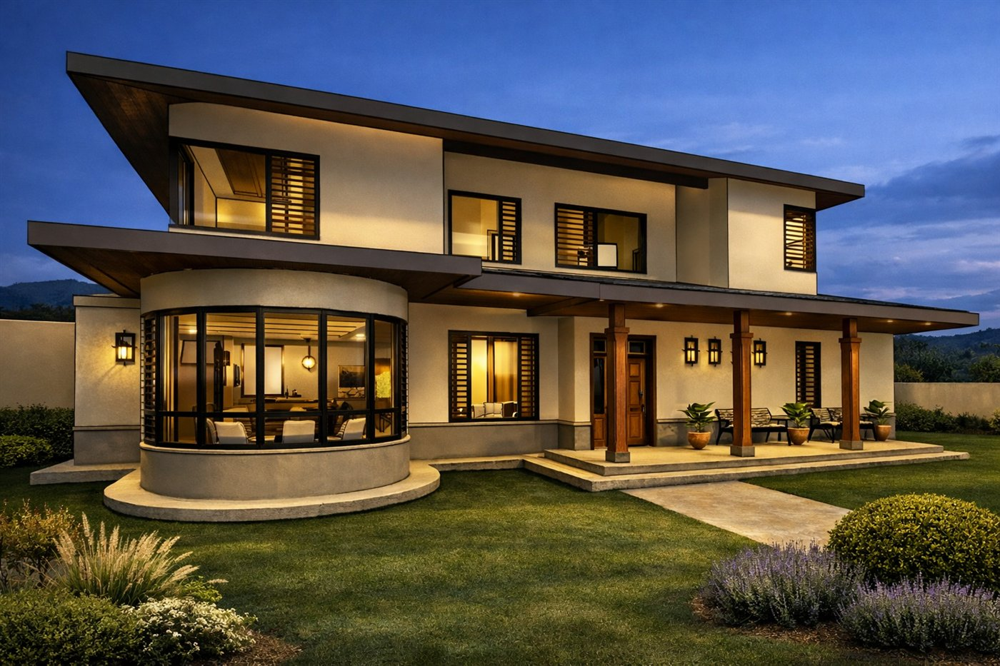
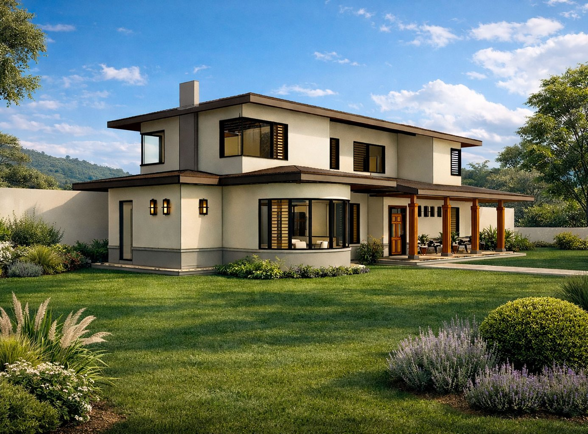

Proyecto
Doña Victoria
El nombre viene de lo victoriano. Es una casa de dos niveles con aleros amplios, un volumen curvo con ventanales y un corredor de columnas de madera hacia el jardín.

Adentro, la sala, el comedor y la cocina comparten un mismo espacio bajo un cielo de vigas de madera con luz indirecta. Los vanos en arco, la isla de la cocina y el piso de concreto pulido completan el interior.
En proceso · segregación del terreno

